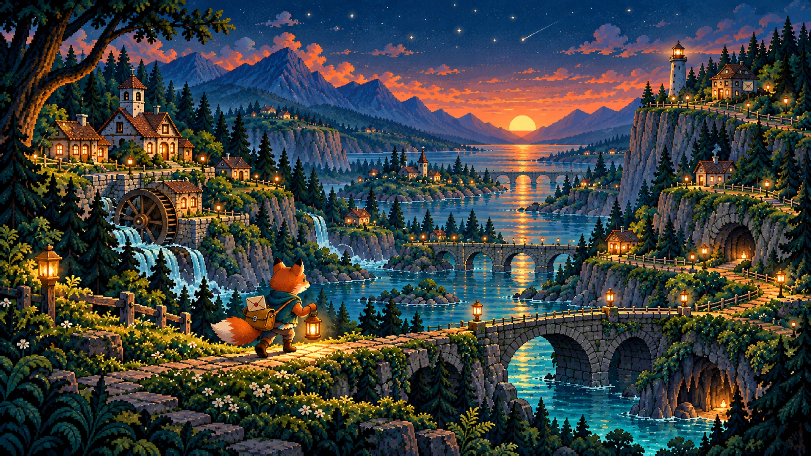
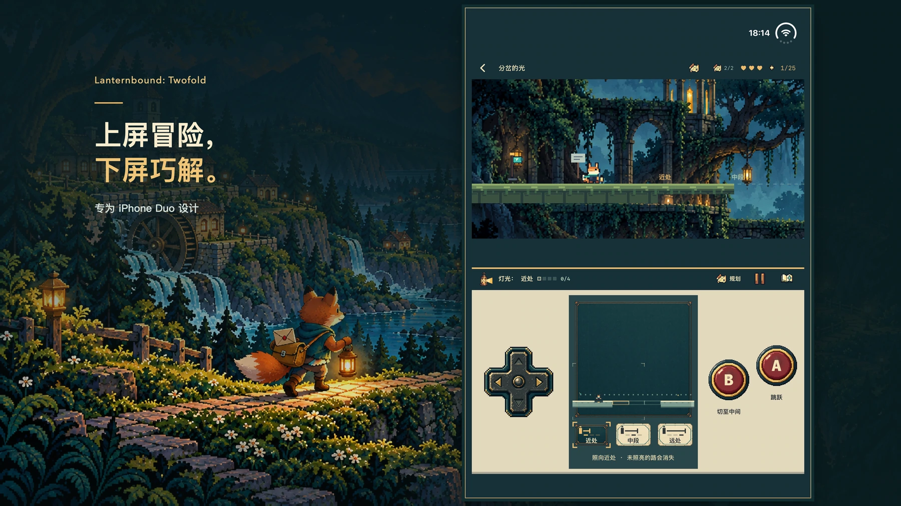

宣传插画；实际游戏画面见下方。
每封信，都让路再近一点。
风暴冲断了道路，新地图又遗漏了一些人家。你是一只年轻的狐狸邮差，为邻居传递消息，也带着一封写给久未回信的恩师的私信。一封信引出下一段旅程；送达十二封主线信件，就能抵达完整结局，再回到谷中看看自己留下的改变。
12故事章节
12可掌握的道具
24可选纪念品

iPhone Duo
上屏冒险，下屏筹划。
世界在上方展开，地图、道具与熟悉的按键留在下方。使用 Duo 内屏，让游戏世界处于操作区上方；受支持的平展布局也保留同样分工。
- 方向键移动，A 跳跃，B 使用当前道具。
- 打开规划暂停行动，查看地图与路线，准备好后回到实时游戏。
- 在下方布置机关，在上方完成跳跃。你的筹划会改变能够走过的路。
别只走最显眼的路。
循着蛾形标记钻入暗道，向上攀登寻找岔路，或下到隧道和隐藏房间。走过的地方，也可能藏着第一次没有注意到的回路。每章两件可选纪念品，各自带着一段小故事。


一个道具学会操作，两个道具改变思路。
用灯光显现道路，用回旋镖敲响铃铛，让平台停住、镜面转向，或让回声替你压住开关。每章围绕当前道具安排四处主挑战，再让指定的两种道具接力配合；有些岔路还会改变使用顺序。

宣传合成图，包含 当前游戏 的实际游戏画面。查看海报 ↗

准备中 · 尚未提交审核或开放购买
完整旅程，一次买断。
计划作为 Duo 专属付费版本推出。一次购买包含全部十二章，无广告、订阅或应用内购买。美国计划售价 $9.99；其他地区最终价格及上架情况以正式 App Store 页面为准。
计划 US $9.99支持 ↗